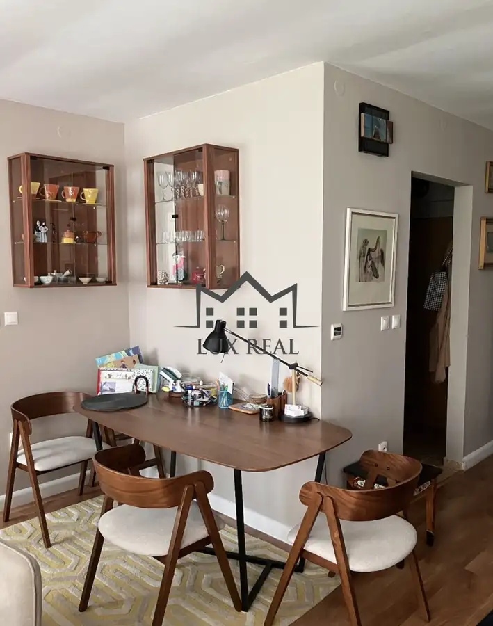
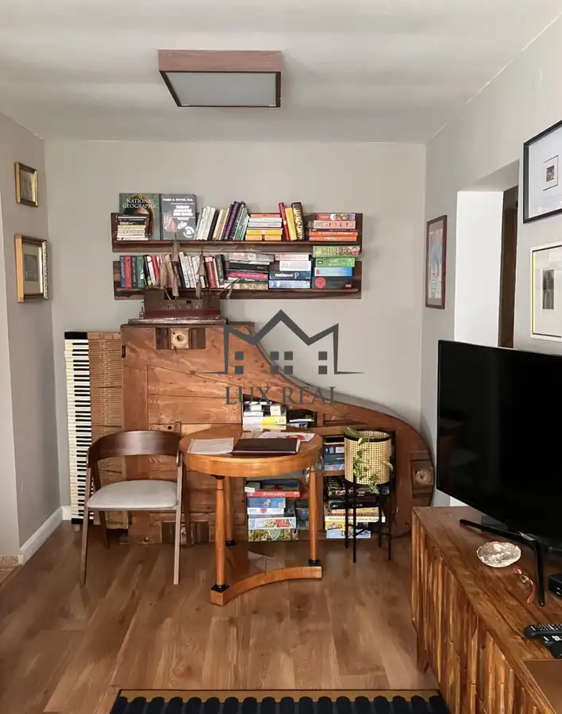
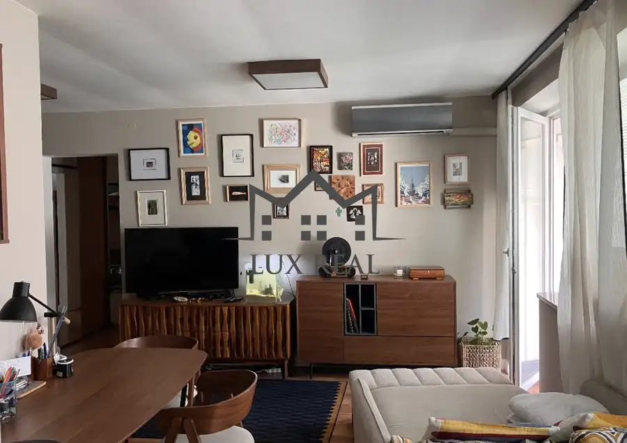
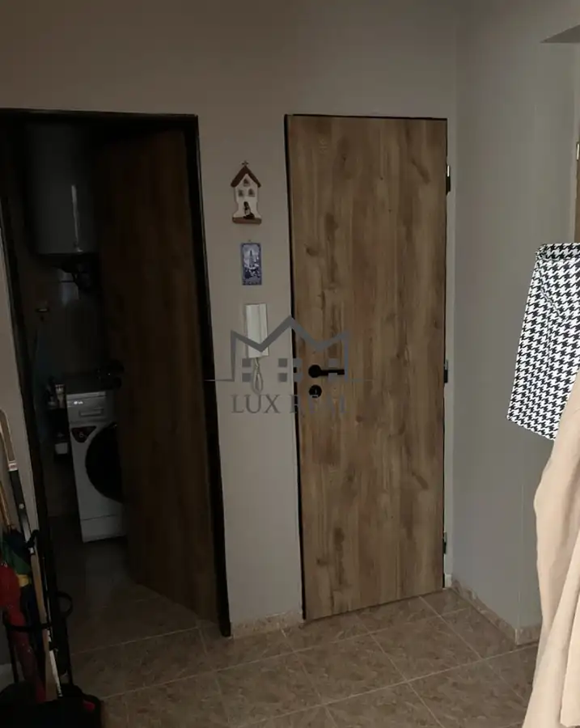
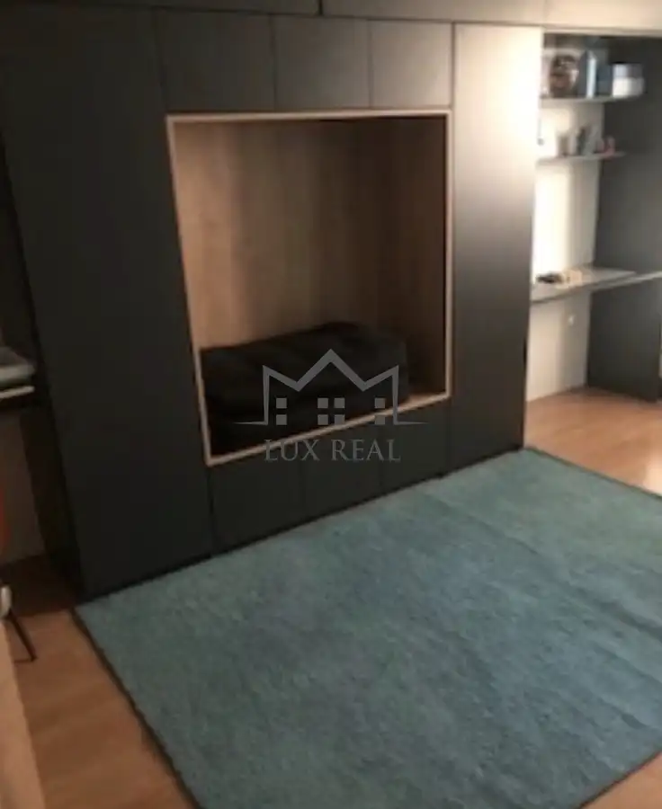
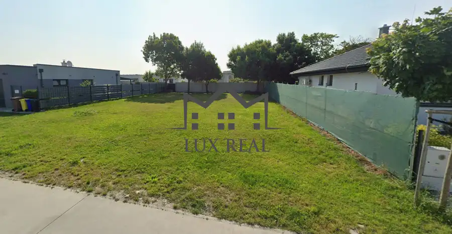
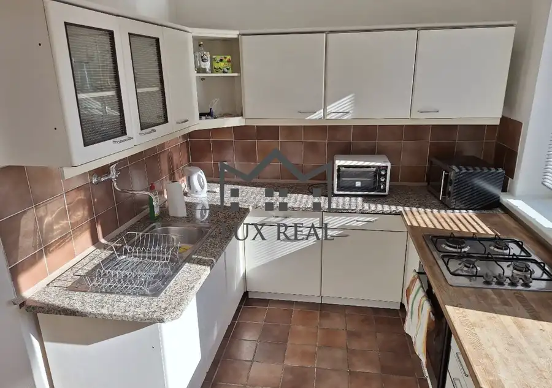
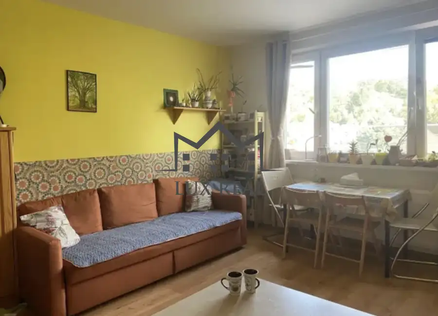

Tichý 3 izbový byt (dve loggie) na predaj
Senec





- Dispozícia3-izbový
- Plocha66 m²
- StavKompletná rekonštrukcia
O nehnuteľnosti
Ponúkame Vám na predaj tichý 3 izbový byt v užšom centre Senca na ulici Pribinova.Byt je o výmere 66 m2 + 7 (2x loggia) a nachádza sa na 3/3 poschodí bez výťahu. Ponúka podlahové kúrenie, klíma v 2 izbách, kúpeľňa s rohovou vaňou, samostatné WC. Susedia sú výborný. V bytovom dome spoločná miestnosť pre bicykle, kočíky.Hneď vedľa sa nachádza škôlka a základná škola, potraviny a pošta + centrum len 5 minút, autobusová stanica 10 minút chôdze. Vlaková 15 minút chôdze. Cena nehnuteľnosti je 204.000€ k cene bude pripočítaná provízia pre realitnú kanceláriu, v rámci ktorej sa postaráme o celý proces tak, aby ste sa mohli sústrediť len na svoje nové bývanie – bez zbytočných návštev úradov a vybavovania formalít. Našim cieľom je, aby ste celý proces zvládli komfortne, bez stresu a bez zbytočného vybavovania.Pre viac informácií a dohodnutie obhliadky kontaktujte:Ing. Michal Čutora +421 911 854 863 cutora@luxreal.sk
Parametre
- Cena vrátane energií
- Nie
- Druh
- 3 izbový byt
- Dátum zverejnenia
- 21. 09. 2026
- Počet lodžií
- 1
- Stav nehnuteľnosti
- Kompletná rekonštrukcia
- Typ
- Predaj
- Vybavenie
- Lodžia
- Úžitková plocha
- 66 m²
Kde to je


Mohlo by Vás zaujímať

PozemokNové 124 900 €Znížená cena! stavebný pozemok v Hrubej Borši na predaj Hrubá Borša 539 m²
BytNové 1 200 €2-izbový byt s balkónom na prenájom Staré Mesto, Bratislava 2-izbový72 m²
BytNové 188 000 €Kompletne prerobený byt v centre Lamač, Bratislava 1-izbový43 m²